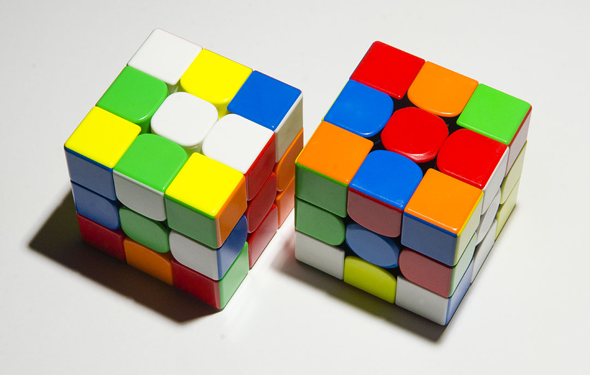

Optimally solving a Rubik's cube is a computationally challenging problem. The puzzle can exist in over 43 quintillion distinct states; for reference, that's an order of magnitude greater than the number of grains of sand on Earth. Quickly finding the shortest path from one of these states to the goal state requires some cleverness.
Before we even start concerning ourselves with solving the cube, let's take it apart to get an idea of how it really works.
Upon disassembling the cube, we see that it is not composed of smaller cubes. Rather, it is made up of edge pieces and corner pieces, rotating around a fixed skeleton (to which the immobile center pieces are attached). Broadly speaking, our goal becomes to put each piece on the correct position and facing the correct direction.
A Quick Guide to Notation §
For those not familiar, the notation used by cubers to express moves on the cube is quite simple. Each move consists of a letter representing the face being turned (Up, Down, Left, Right, Front, or Back).
After this letter, there may be a symbol indicating how much to turn. An unembellished letter is taken to mean a clockwise 90° turn, while a "2" indicates a 180° turn. Finally, an apostrophe (read as "prime", a convention taken from mathematics) signifies a counterclockwise 90° turn.
Thinking with Cubies §
The moving pieces that comprise a Rubik's cube are referred to as "cubies" in the literature.
Now that we have some insight on the inner workings of the cube, we can start building an abstract representation of the puzzle that our solver can work with. We can store the position of each corner/edge cubie using arrays of length 8 and 12, respectively. However, the cubies can also be in different orientations, which we must keep track of. This requires us to establish some conventions.
Corner Orientation §
We'll start with corner orientation. Corner cubies will always reside in either the top or bottom layer of the cube. As a consequence, every corner will have a white or yellow sticker, which we can use as a point of reference. We'll say that if this sticker is facing up/down in the cubie's current position, the corner has an orientation of . One clockwise twist of the corner from this position gives an orientation of , and another clockwise twist gives an orientation of .
Edge Orientation §
Like corner orientation, we will stick with the strategy of assigning an arbitrary sticker on each edge cubie to serve as a reference. For the pieces in the top/bottom layers, we will use the white/yellow stickers. This leaves us with the four middle edges; for these, we will treat the stickers on the front or rear face as the point of reference. This gives each edge cubie two possible orientations: if the key sticker is facing one of the faces which we have chosen to use as references, or if the edge is facing the other way.
If you are an intermediate speedcuber, you likely already have some degree of familiarity with the concept of edge orientation, because EO has some implications for speedsolving. Specifically, an oriented edge can be solved (put into the correct position with the correct orientation) using only the moves . This property is quite useful because it allows many parts of the solve to be completed without rotations of the entire cube, making the ability to recognize and control edge orientation invaluable for speedcubers.
Using this information, we can create a structure to represent a cube.
struct Cube {
uint8_t corners[8];
uint8_t corner_twist[8];
uint8_t edges[12];
uint8_t edge_flip[12];
};We can also calculate the number of possible cubes:
Wait a moment. This number is considerably bigger than the 43 quintillion figure we cited earlier. What gives? Well, it turns out that if you randomly reassemble a Rubik's cube, it will only be solvable 1 in 12 times. To understand how we arrive at this figure, let's take a look at the conditions for solvability.
The Laws of the Cube §
For a second, let's ignore orientation and think only about permutation. Suppose we kept track of the position of each cubie using a list of numbers through . (This scheme is a tad stupid—a corner can never occupy a position normally occupied by an edge—but bear with me.) Mathematically, this list would be a permutation, an ordered list where each value occurs exactly once. We could simulate the effect of turning the cube by swapping elements in the list.
Permutations have an interesting property called parity. Just like integers, every permutation can be classified as odd or even. Even permutations can only be obtained by performing an even number of swaps, and vice versa for odd permutations.
When the cube is solved, it has even parity, because zero swaps have been performed. Furthermore, a quarter turn can be expressed as six swaps, meaning that the overall parity of the cube will always be even. This eliminates half of all possible states: if a position has odd parity, no matter what move we apply to it, it will always produce another position with odd parity, making it unsolvable.
Further reductions in the number of solvable states are explained by the rules surrounding corner and edge orientation.
EO Rules §
Let's look at how certain moves affect edge orientation. The moves leave EO untouched, meaning we just need to concentrate our attention on and . If you manually track the orientation of each edge in one of these layers before and after a quarter turn, a pattern emerges: both moves cause the orientation of every affected edge to flip.
From this, we can draw an important conclusion: the number of flipped edges must always be even. Every move that affects EO flips four edges, meaning that there is no sequence of moves that leaves exactly one edge flipped. This further reduces the number of solvable states by half.
CO Rules §
The rules surrounding corner orientation are a little less intuitive compared to EO, but they function in a pretty similar way. CO is affected by the moves ; if you try some of these moves and analyze how they affect corner orientation, you'll see that the sum of the corners' orientation is always divisible by three. This makes another two-thirds of all states unsolvable.
With our newfound knowledge of the laws of the cube, we can rewrite our original expression:
Nice!
The Search Algorithm §
Now that we have thoroughly explored the practical details of representing the cube, we can start thinking about how we're actually going to find an optimal solution.
For starters, we can recognize that optimally solving a Rubik's cube is a graph search problem. Each possible state is a vertex in the graph, with the edges between vertices representing moves that transform one state into another.
If we treat this graph as a tree rooted in the initial state, we could traverse the tree in breadth-first fashion until we found a path to the goal state. However, BFS suffers from exploding space usage, since the number of nodes that we need to keep track of grows exponentially with depth. At any point, there are 18 distinct moves that we can apply to the cube—6 faces times three different degrees of turning (clockwise, 180°, and counterclockwise). Thankfully, we can bring down the branching factor with some simple optimizations, as outlined by Richard Korf in his seminal 1997 paper on optimally solving the cube:
Since twisting the same face twice in a row is redundant, ruling out such moves reduces the branching factor to 15 after the first move. Furthermore, twists of opposite faces of the cube are independent and commutative. For example, twisting the front face, then twisting the back face, leads to the same state as performing the same twists in the opposite order. Thus, for each pair of opposite faces we arbitrarily chose an order, and forbid moves that twist the two faces consecutively in the opposite order. This results in a search tree with an asymptotic branching factor of about 13.34847.
…but even with this reduced branching factor, searching the entire tree is still much too slow.
The alternative is to use depth-first search. A simple DFS does not work because the tree is infinite, so we must set a depth limit. In order to guarantee optimality, we can start with a depth limit of zero and successively increase the limit until a solution is found. This algorithm is called iterative deepening depth-first search, or IDDFS.
IDDFS still explores every possible state, which is what we want to avoid. What we need is some heuristic which tells us which parts of the tree we don't need to search.
The Heuristic §
For our purposes, the heuristic will be some function that gives a lower bound on the number of moves required to solve a given state. At any point in our search, if the value of the heuristic plus the current depth exceeds the depth limit, we can stop searching that subtree. This is called pruning.
The heuristic must never overestimate the number of moves it will take to solve a position, or else we may accidentally stop searching a branch that contains a solution. This condition is called admissibility. How do we construct an admissible heuristic?
Ideally, we would have a lookup table that recorded the number of moves required to solve every possible state. However, such a table would be much too large to construct or store. Instead, we can compute the amount of moves necessary to solve part of the cube.
For example, let's say we ignored the edges of the cube and focused our attention on the corners, essentially treating the cube as a 2x2x2. The corners can exist in different configurations; we could run a BFS on the entire problem space in a short amount of time and save the resulting table. Then, during our search, we can look up the number of moves necessary to solve the corners of the state that we are currently inspecting and use that value as the heuristic. This value is clearly admissible since any solution that solves the cube will also solve the corners.
This brings us to an interesting problem: how do we map the corner configuration of a cube to an array index? We can break this down into two subproblems:
- Mapping corner orientation to an integer
- Mapping corner permutation to an integer
Creating an index for corner orientation is fairly easy; we can treat the corner orientation values as digits of a base-3 number, giving us our index.
int compute_co_coord(struct Cube *cube) {
int coord = 0, base = 1;
for(int i = 0; i < 7; i++) {
coord += cube->corner_twist[cube->corners[i]] * base;
base *= 3;
}
return coord;
}Encoding a permutation as an integer is slightly more challenging. How this can be accomplished is outside the scope of this article, although if you want to learn about the solution, the term you want to Google is Lehmer code.
Symmetry Reduction §
Here's a bit of an experiment that you can try if you happen to own two or more cubes. Let's say we apply some sequence of scrambling moves to both cubes, except we hold them in different initial orientations. Take a look at the two cubes—notice anything about them?

These two states are indisputably different, but clearly they are functionally identical—we can recolor the faces on one cube to turn it into the other one. Intuitively, these two cubes must also require the same number of moves to be solved, meaning that there's no point in storing entries for both in our pruning table.
The potential for gains here is pretty huge. Each state can have up to 48 symmetry-equivalent siblings (24 possible orientations, times two because we can mirror the scramble). A small portion of states have fewer than 48 symmetry equivalents because they remain unchanged under reflection/rotation from certain angles. If we only stored one entry for all the symmetry equivalents of a given state, we can effectively multiply the size of our pruning table 48x.
How do we actually make use of symmetry? For starters, let's first define it in terms of cubies instead of face colors, so that it is compatible with our cube representation.
TODO
The Inverse §
There's one last trick up our sleeve that we can use to further boost our pruning. Suppose is the sequence of moves that creates some position. We know that there is some sequence of moves such that produces the solved state. Because of this relationship, we call the inverse of . These two positions must be at the same distance, but our pruning table might have a greater value for than . Thus, we can look up both positions and take the maximum of both lookups as the value of the heuristic, potentially boosting our pruning.